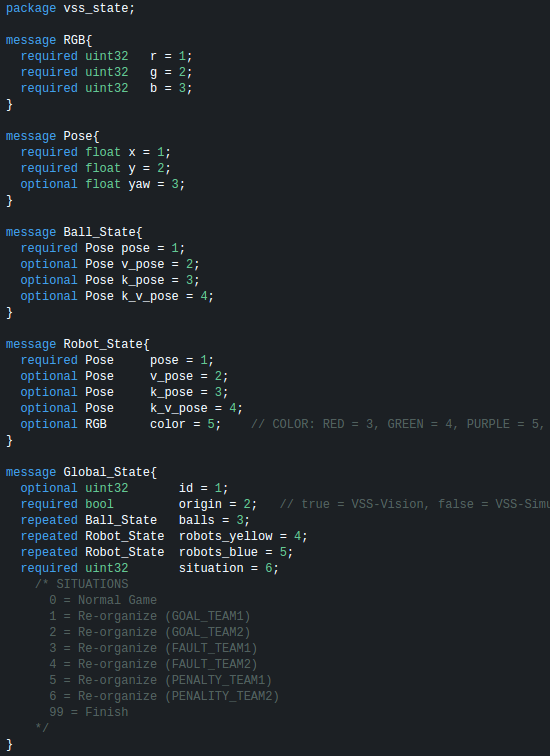
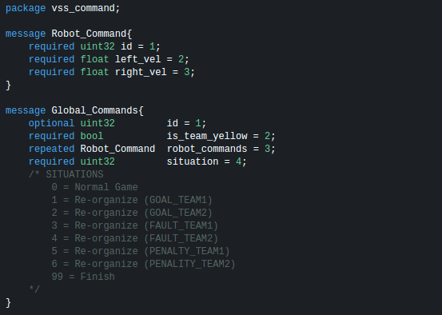
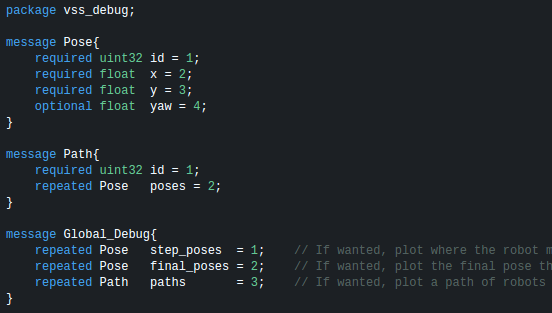
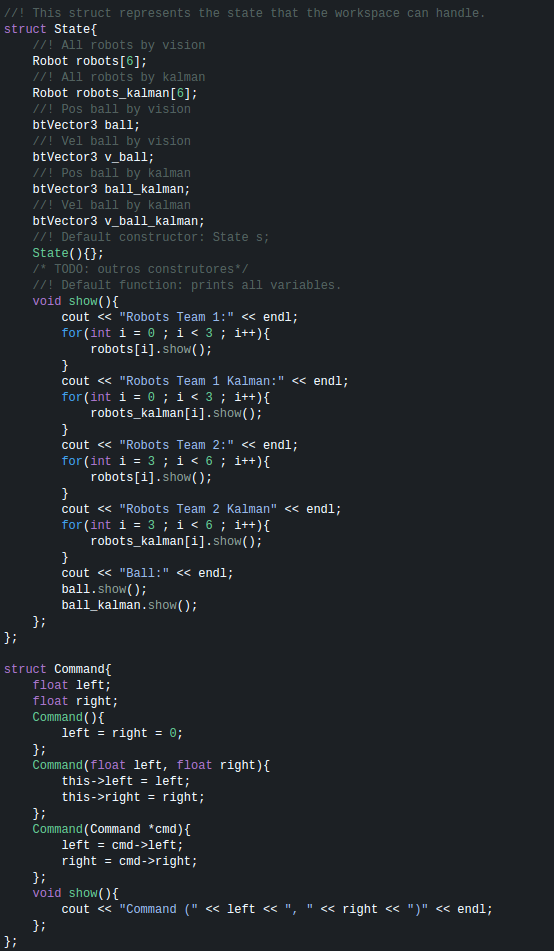
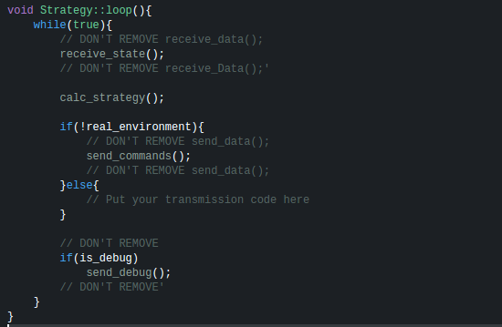
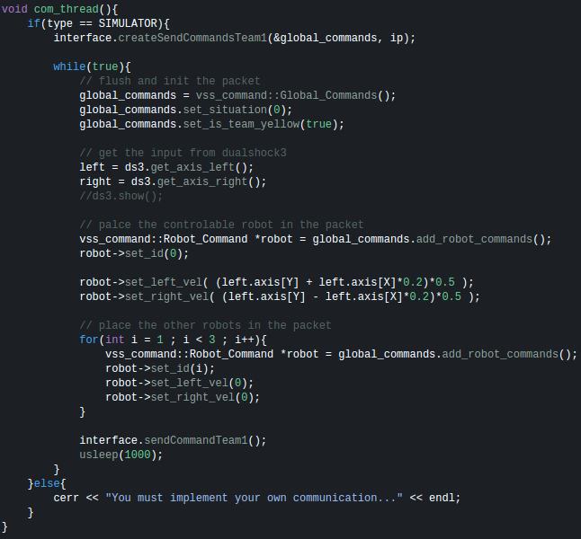

Dica:
Utilize o Visual Studio Code para desenvolver. O Debug já está configurado para o mesmo.
Exemplos de utilização básica com as tags: vision, sim, viewer, joy, sample e debug
./run.sh sim
./run.sh sim viewer
./run.sh sim viewer joy
./run.sh sim viewer yellow=sample
./run.sh sim viewer yellow=sample blue=sample
./run.sh sim viewer yellow=sample blue=sample debug
./run.sh sim viewer yellow=joy blue=sample
./run.sh vision
./run.sh vision viewer
Para que seja possível executar o projeto de maneira mais maleável e em diferentes máquinas é necessário deixar um terminal para cada aplicação. Esse tipo de execução é bastante comum em sistemas desacoplados e quase que padrão em grandes projetos de robótica. Todos os projetos possuem parâmetros de execução e para vê-los basta entrar com o parâmetro -h.
./VSS-Simulator -h
-h [ --help ] (Opcional) Exibe todos os parâmetros possiveis.
-f [ --fast ] (Opcional) Aumenta a velocidade do decorrer do tempo em 25 vezes.
-g [ --goal ] (Opcional) Aumenta a quantidade de gols necessários para acabar uma partida. Valores entre 10 e 100.
./VSS-Viewer -h
-h [ --help ] (Opcional) Exibe todos os parâmetros possiveis.
-c [ --camera ] (Opcional) Muda a posição da camera (arg=tv ou top).
-d [ --debug ] (Opcional) Ativa a recepção e desenho do debug de caminhos e poses.
-i [ --ip_state ] (Opcional) Define o IP de uma máquina na rede que esteja rodando o VSS-Vision ou VSS-Simulator.
./VSS-Joystick -h
-h [ --help ] (Opcional) Exibe todos os parâmetros possiveis.
-i [ --ip_sender ] (Opcional) Define o IP de uma máquina na rede que esteja rodando o VSS-Simulator
-r [ --real ] (Opcional) Envia comando para robôs reais ao invés do VSS-Simulator. Porém é necessário adicionar o módulo de comunicação.
./VSS-SampleStrategy -h
-h [ --help ] (Opcional) Exibe todos os parâmetros possiveis.
-d [ --debug ] (Opcional) Ativa a envio de debug de caminhos e poses.
-i [ --ip_receive_state ] (Opcional) Define o IP de uma máquina na rede que esteja rodando o VSS-Vision ou VSS-Simulator.
-I [ --ip_send_debug ] (Opcional) Define o IP de uma máquina na rede que esteja rodando o VSS-Viewer
-s [ --ip_send_command ] (Opcional) Define o IP de uma máquina na rede que esteja rodando o VSS-Simulator.
-c [ --color ] (Obrigatório) Define a cor do tipo (arg=yellow ou blue)
Utilizamos sockets para possibilitar a comunicação entre os projetos em uma máquina ou em várias. É utilizado a biblioteca protobuf para serializar os dados e a biblioteca ZMQ para o envio via sockets. Com essa combinação é possível desenvolver uma estratégia (inteligência) em qualquer linguagem de programação que suporte protobuf, como: C++, Java, Python, JavaScript, Go, Ruby, Objective-C, C#, Perl, PHP, Scala e Julia.
Esse é o protocolo que os projetos VSS-Vision e VSS-Simulator utilizam para enviar os estados dos objetos em campo. Ambos abrem uma comunicação multicast na porta 5555.
Esse é o protocolo que o projeto VSS-Simulator utiliza para receber os comandos dos dois times. São abertas as portas 5556 e 5557 para comunicação unicast.
Esse é o protocolo que projeto VSS-Viewer utiliza para receber caminhos e poses de debug dos dois times. São abertas as portas 5558 e 5559 para comunicação unicast.
O projeto VSS-SampleStrategy fornece um exemplo de como desenvolver uma estratégia que se comunique com o SDK. Todos os estados enviados pelo VSS-Vision e VSS-Simulator são adicinados na variável da classe strategy State state, para acessar por exemplo a pose do robô zero do seu time, isto é, posição X, Y e rotação em Z, basta em qualquer método de Strategy chamar state.robots[0].pose, a mesma coisa para a pose do robô zero do time adversário, diferenciando somente state.robots[0+3].pose. Para enviar os comandos para o VSS-Simulator basta atualizar a variável Command commands[3] com os valores de velocidade das rodas esquerda e direita dos robôs [0], [1] e [2] para que os mesmos se direcionem para as poses objetivos.
Para enviar comandos para robôs reais basta adicionar uma chamada para o código de transmissão no else enviando os valores de Command commands[3].
O projeto VSS-Joystick fornece um exemplo de como controlar robôs no VSS-Simulator e reais. Para enviar comandos para robôs reais basta adicionar uma chamada para o código de transmissão no else.
Utilize o Visual Studio Code para desenvolver. O Debug já está configurado para o mesmo.